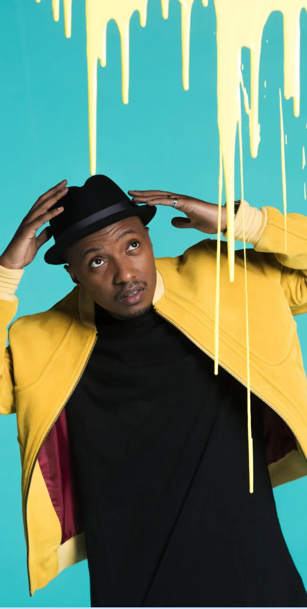

Voir aussi :

“Mon Précieux”
Faut-il se remettre en question ?
Cette chanson a été écrite et interprétée en 2016 par Said M’Roumbada, plus connu sous le nom de Soprano.
Sixième extrait de l’album « L’Everest », « Mon précieux » évoque la relation que nous entretenons avec nos téléphones portables. Un titre mélangeant humour et ambiance pop urbaine.
Un titre engagé
Soprano n’hésite pas à travers ses chansons à transmettre des messages forts.
Ici avec « Mon précieux », le chanteur critique à travers ses mésaventures du quotidien notre addiction grandissante pour les portables.
Il pointe du doigt les dangers qui accompagnent notre utilisation abusive des téléphones portables mais aussi les changements qu'ils ont apportés sans même que nous nous en rendions réellement compte. Et cela ne se limite pas que à la nouvelle génération. Tout le monde est concerné.
Je ne sais plus vivre sans toi à mes côtés ; Ton regard pixelisé m'a envoûté
Une touche d'humour
Le rappeur dénonce ici l’usage intensif des smartphones mais bien sûr à sa manière. Avec humour, il nous décrit des mauvaises habitudes qui sont maintenant devenues une évidence pour beaucoup de monde. La chanson est écrite pour montrer la relation fusionnelle que le chanteur entretient avec le smartphone. Comme s’il parlait d’une femme,
il chante :
Ta douce mélodie me réveille chaque matin […] Puis, je te caresse le visage pour voir si tout va bien
Dans le clip, le téléphone prend une taille humaine et accompagne Soprano dans son quotidien. Dans vraiment chaque moment de sa journée :
Tellement inséparable qu'on part ensemble au petit coin

Et pour bien mettre en avant l’ironie des paroles, il y a l’assistante vocale représentant le téléphone de l’artiste qui se moque également de nous :
Vous n'avez pas vu vos amis depuis deux mois ; Votre vie est digitale ; LOL
Alors, êtes-vous autant attaché à votre téléphone que Soprano ?